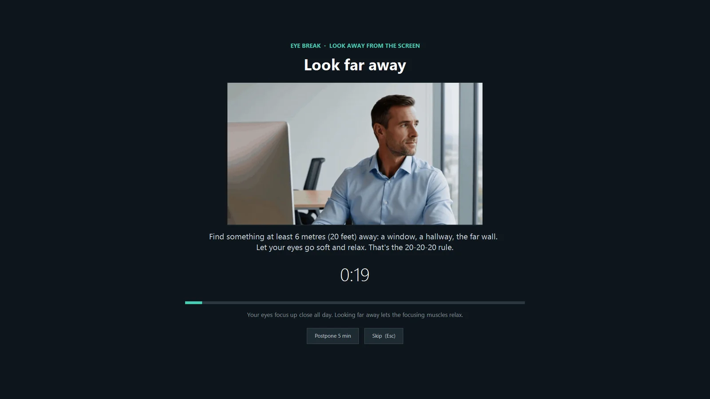
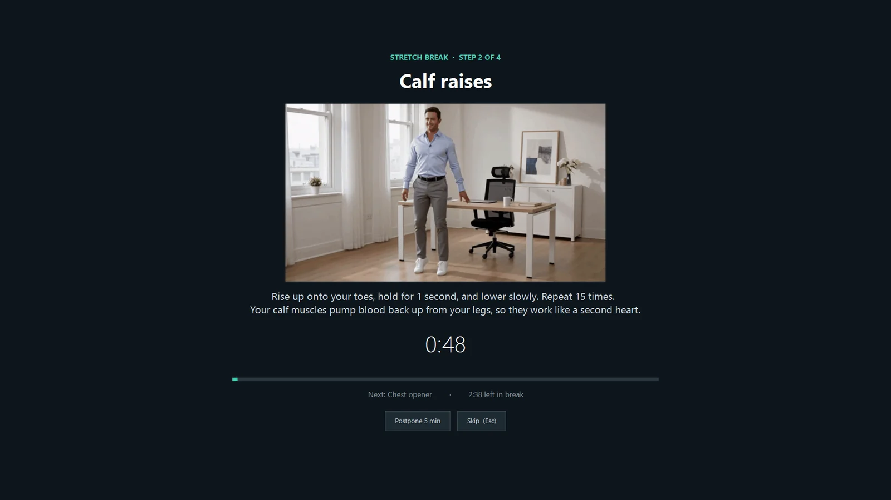
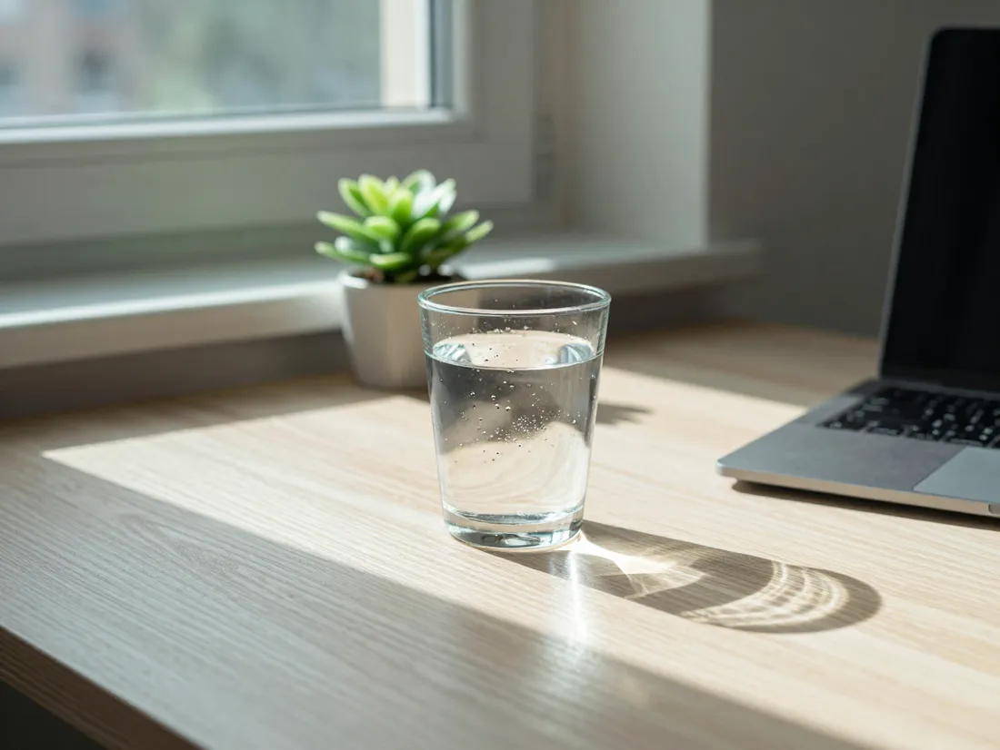
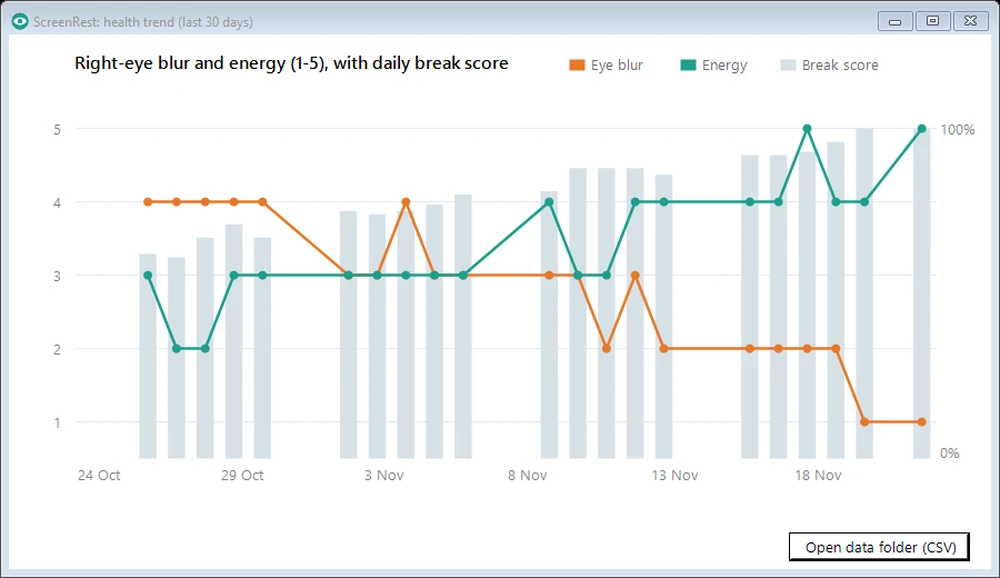
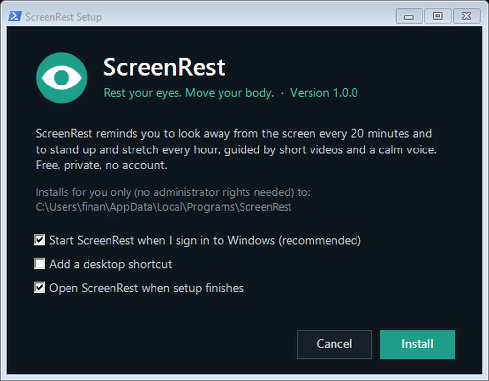
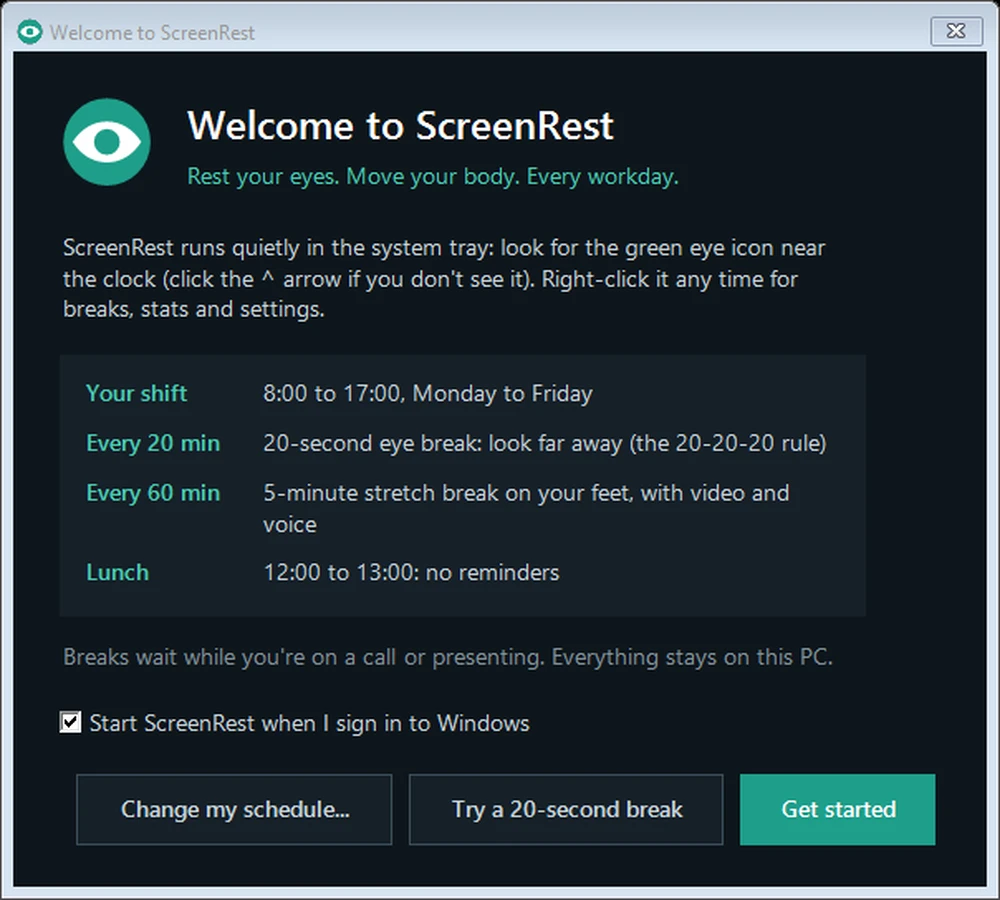
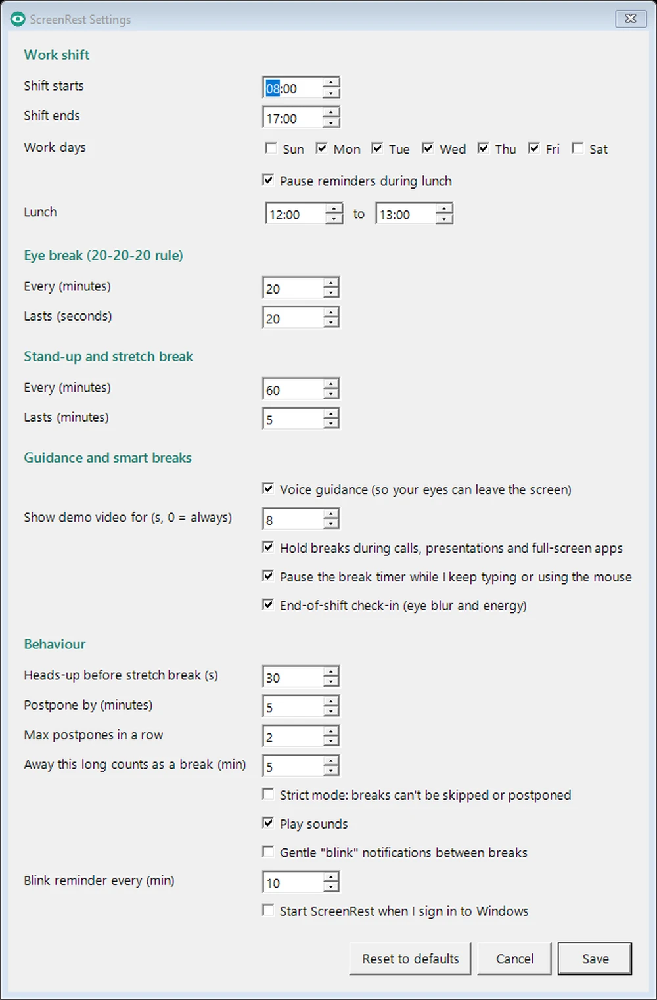

Rest your eyes.
Move your body.
Every workday.
ScreenRest is a friendly break coach for people who spend the day at a screen. Every 20 minutes it gets your eyes off the monitor; every hour it gets you standing and moving, guided by short videos and a calm voice.
- 100% free
- No sign-up
- Nothing leaves your PC
- No admin rights needed
- Uninstall any time
Your eyes and body were not built for nine hours of staring
Long stretches of close-up screen work leave eyes tired, dry and blurry, and hours of sitting slow your circulation. Small, regular breaks help. The hard part is remembering, and ScreenRest handles that for you.
The eye-break rule
Every 20 minutes, look at something about 20 feet (6 m) away for 20 seconds. Your focusing muscles finally get to relax.
On your feet each hour
Stand up, do a few guided moves for your neck, shoulders, back and legs, then walk and drink some water.
Set it once, forget it
ScreenRest follows your shift and lunch hour, waits while you're on a call, and quietly counts your progress.
Your whole shift, covered automatically
Here is the default 8:00 to 17:00 day. You can change the hours, work days, lunch and break lengths in Settings.

A gentle pause for tired, blurry eyes
Every 20 minutes the screen softly dims and walks you through a 20-second eye exercise, from looking far away to palming and slow blinks.
- Six eye exercises that rotate so it never gets boring
- A heads-up a few seconds before, so you can finish your sentence
- Covers every monitor, so there's nothing to sneak a look at
- Stepping away from the keyboard counts as a break automatically

Five minutes on your feet, coached by video and voice
Once an hour ScreenRest gets you standing: a short demo shows each move, then a calm voice takes over so your eyes can leave the screen.
- Stand up, about four moves, then walk and drink water
- 14 desk-friendly moves for neck, shoulders, back, hips and legs
- Spoken instructions for every step. Press V to see the video again
- Postpone a few minutes when you really need to, or turn on strict mode


Know whether it's working
A five-second check-in at the end of each shift records how blurry your eyes felt and how much energy you had. Over a few weeks, the trend chart shows the difference breaks make.
- Daily break score and a weekly summary every Friday
- 30-day chart of eye blur, energy and breaks taken
- Plain CSV file you own, handy to show your optometrist
Breaks that fit around real work
A reminder you learn to ignore is no reminder at all. ScreenRest is built to stay out of the way until the moment it matters.
Waits during calls
When your camera or microphone is on, or you're presenting full-screen, the break waits and starts once you're free.
Hands-off check
If you keep typing during a break, the countdown pauses until you actually step away. No cheating your own eyes.
Follows your shift
Active only during your work hours and days, silent at lunch, and it greets you in the morning and wraps up your day.
Calm voice guidance
Every exercise is read aloud in a warm, unhurried voice, so you can follow along with your eyes closed or looking out the window.
Pause when you need to
Pause for 30 minutes, an hour or the rest of the day from the tray icon. Reminders come back on their own.
Make it yours, in English or Tagalog
Change intervals, break lengths, warnings, sounds and postpone limits. Switch the whole app to Tagalog in one click. Strict mode is there if you want no way out.
20 guided moves, no gym clothes required
Every exercise comes with a looping video and spoken instructions. Everything is done standing at your desk, and ScreenRest picks a fresh mix each time.
Simple to install, simple to live with

1. Install. One small setup file, installed just for you. No administrator rights and no restart needed.

2. Say hello. A quick welcome shows your plan for the day. Try a 20-second break straight away if you like.

3. Tune it. Right-click the eye icon by the clock to set your shift, lunch and how often you want breaks.
Your health data is yours. Full stop.
ScreenRest never connects to the internet. There is no account, no analytics and no advertising. Your settings and history are plain files on your own PC that you can open, back up or delete any time.
Works completely offlineNo servers, no sign-in, no telemetry.
Local, readable filesSettings and a simple CSV history in your user folder.
Clean uninstallRemove it from Windows Settings, with the option to erase your data too.
Get ScreenRest free
Free to download and use. No trial, no account, no catch.
Windows installer
Installs for your user account, adds ScreenRest to the Start menu and can start it automatically when you sign in.
- File
- ScreenRest-Setup-1.1.0.exe
- Size
- 43 MB
- SHA-256
- BFE649E7613CF3AF5FCB61585520A8023A2FE5713416C4964E0DD11B4920D0A6
Portable version
A zip file to unpack anywhere, even a USB stick. Double-click ScreenRest.exe to run. Nothing is installed.
- File
- ScreenRest-1.1.0-portable.zip
- Size
- 43 MB
- SHA-256
- C62D7E3CA0457327BE973E177E817B662FF84D9A35AFC8D1ADA960B3D254C75A
Seeing "Windows protected your PC"? ScreenRest is a new app that isn't code-signed yet, so Microsoft SmartScreen may show a blue warning the first time. Click More info, then Run anyway. You can check that your download is intact by comparing its SHA-256 checksum above (in PowerShell: Get-FileHash .\ScreenRest-Setup-1.1.0.exe).
Questions, answered
Is ScreenRest really free?
Yes. There's no paid version, no trial period, no ads and no account. Download it and use it as long as you like.
Is it available in Tagalog?
Yes. Choose English or Tagalog on the welcome screen, or any time in Settings under Language / Wika. Every screen, exercise and summary switches over. The spoken voice guidance is in English for now.
Where do I find it after installing?
ScreenRest lives in the system tray: look for the green eye icon near the clock (click the small ^ arrow if it's hidden). Right-click it for breaks, stats, pause and settings. It's also in the Start menu.
Will it interrupt my video calls or presentations?
No. When your camera or microphone is in use, or a full-screen app such as a presentation or video is in front, ScreenRest holds the break and starts it shortly after you're free.
What if I'm in the middle of something important?
You get a heads-up before every break. During a break you can postpone it by a few minutes (twice in a row by default) or skip it with Esc. If you'd rather have no escape hatch, turn on strict mode.
Can I change the schedule?
Yes. Set your shift start and end, work days, lunch hour, how often eye and stretch breaks happen, and how long they last. The defaults follow the 20-20-20 rule and a 5-minute stretch every hour.
Does it collect any data?
No. ScreenRest doesn't connect to the internet at all. Your settings and daily stats are stored as plain files in your user folder (%APPDATA%\ScreenRest).
How do I uninstall it?
Open Windows Settings, go to Apps, then Installed apps, find ScreenRest and choose Uninstall. You'll be asked whether to keep or delete your history. For the portable version, just delete the folder.
Is this medical advice?
No. ScreenRest is a wellness reminder that helps you build healthy screen habits. If your vision stays blurry or you have pain, please see an optometrist or doctor.
Start your next break in under a minute
Your eyes will notice by the end of the week. Your back will thank you sooner.
Download ScreenRest for Windows